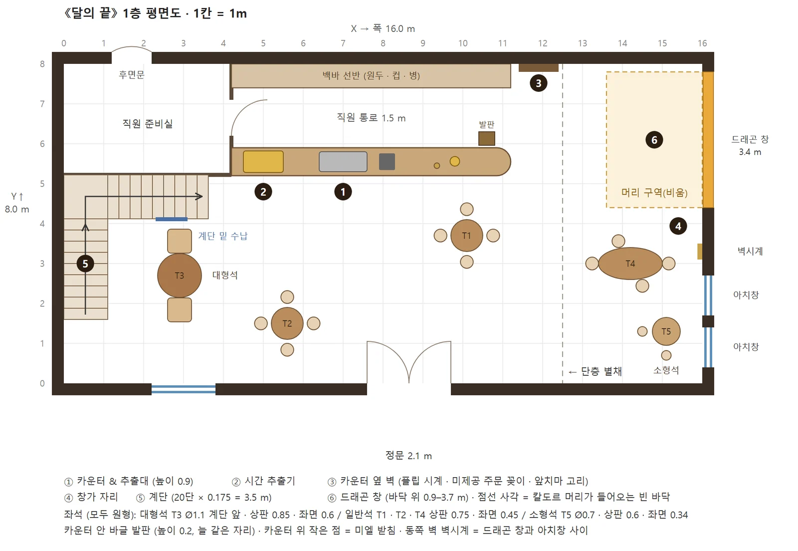
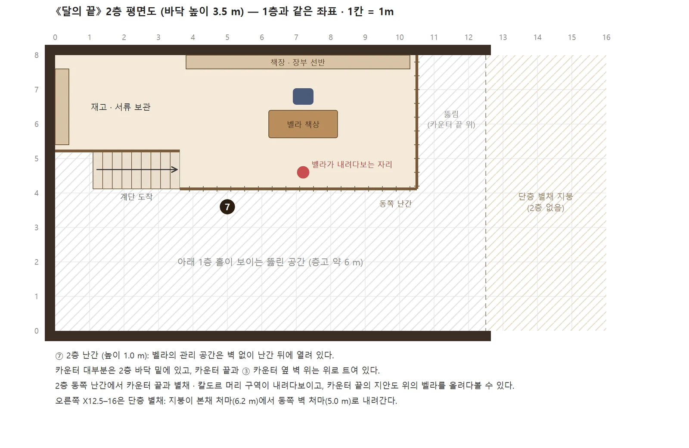
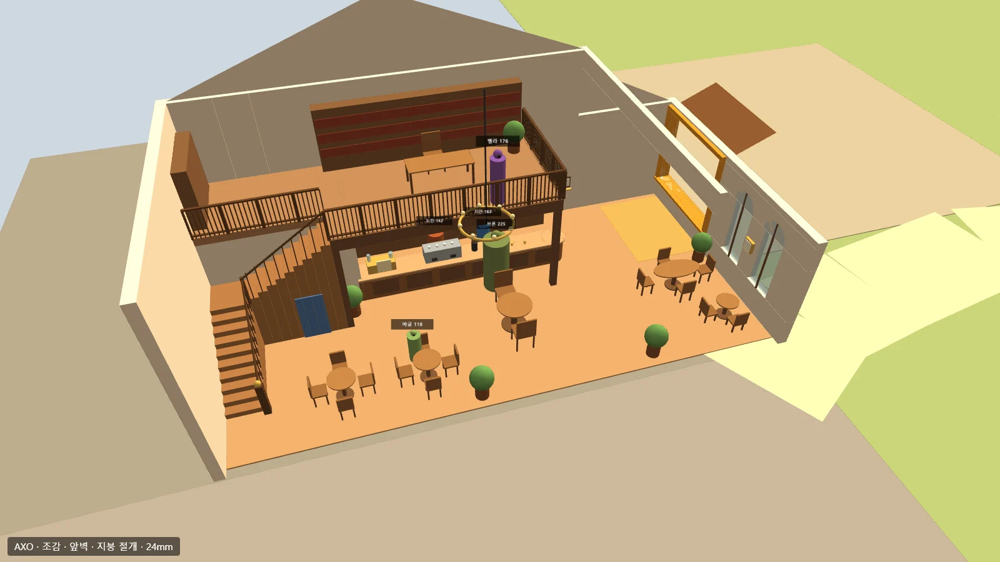
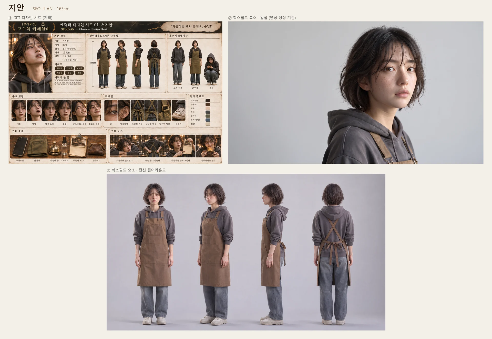
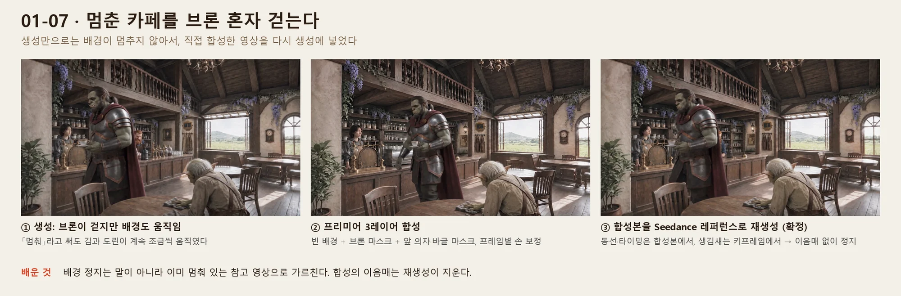
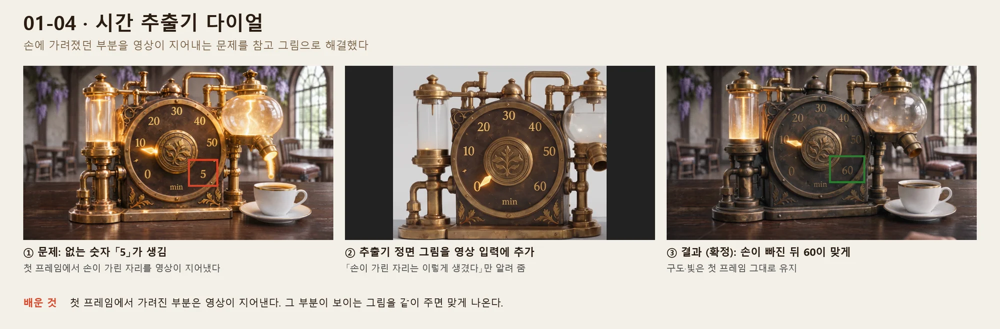

[상시모집] 고수익 카페알바
AI 단편 애니메이션 프리비즈 · SEQ 01 진행 중
프로젝트 개요Overview
월세가 밀린 지안이 ‘고수익 카페알바’ 공고를 따라간 곳은, 손님에게 시간을 파는 이세계 카페 《달의 끝》입니다. 손님에게 내어 준 10분은 직원의 퇴근 시간으로 메워집니다.
전체 이야기를 20개의 핵심 장면으로 정리한 뒤, 첫 시퀀스(SEQ 01)부터 영상으로 만들고 있습니다. 거대한 오크 기사가 카페에 들어와 딸에게 편지를 쓸 10분을 부탁하고, 커피 한 모금에 세계가 멈추는 장면까지입니다.
담당 작업Role
이야기와 콘티, 카페 공간과 카메라 위치 설계, 캐릭터와 장면 이미지·영상의 생성 연출, 편집과 음악을 맡았습니다.
- GPT
- Higgsfield
- Nano Banana Pro
- Seedance 2.5
- Suno
- Premiere Pro
- Claude Code
제작 과정Process
장면을 바로 생성하지 않고, 이야기 → 공간 → 캐릭터 → 장면 순서로 기준을 먼저 세운 뒤 그 기준에 맞춰 생성했습니다.
01.이야기를 20장면으로
전체 이야기를 핵심 장면 20개로 먼저 정리하고, 이 순서를 기준으로 시퀀스별 컷을 나눴습니다.

02.카메라를 놓기 전에 카페부터
1층·2층 평면도와 단면도로 카운터, 계단, 드래곤 창의 위치와 높이를 먼저 정했습니다. 오크 기사(225cm)부터 고블린(118cm)까지 인물의 키를 같은 축척에 놓아, 컷마다 키 차이가 흔들리지 않게 했습니다.
같은 좌표로 3D 블록아웃을 만들어 카메라 위치와 렌즈를 정하고, 그 구도로 장면을 생성했습니다.




03.기획 시트에서 영상용 캐릭터로
GPT로 캐릭터 디자인 시트(성격 · 표정 · 소품 · 포즈)를 먼저 정리하고, 영상 생성에 쓸 실사 톤 얼굴과 전신 턴어라운드를 다시 만들어 Higgsfield 요소로 등록했습니다. 컷마다 같은 인물이 나오도록 모든 장면은 이 요소를 기준으로 생성했습니다.
브론의 갑옷은 영상 작업 중 시트의 어두운 가죽에서 회색 강철로 확정했고, 부러진 오른쪽 엄니는 컷마다 유지되도록 따로 관리했습니다.



04.SEQ 01 스토리보드
조용한 한낮의 카페에 거대한 오크 기사가 들어와 “딸에게 편지를 쓸 10분”을 부탁합니다. 커피 한 모금에 세계가 멈추고, 브론은 그 10분 동안 편지를 씁니다. 시간이 다시 흐르자, 지안의 퇴근 시계는 18:00에서 18:10이 되어 있습니다.

문제 해결Problem Solving
생성 결과를 그대로 쓰지 않고, 틀린 곳의 원인을 찾아 방법을 바꿨습니다. 같은 문제로 두 번 실패하면 지시를 더 길게 쓰는 대신 방법을 바꾸는 것을 원칙으로 했습니다.
01.멈춘 카페를 브론 혼자 걷는다
생성만으로는 배경이 멈추지 않았습니다. 브론을 지운 빈 배경, 걷는 브론, 브론 앞을 가리는 의자와 바글을 Premiere Pro에서 세 레이어로 합성하고, 마스크가 놓친 부분은 프레임마다 직접 채웠습니다.
이 합성본을 동작 참고 영상으로 다시 생성에 넣어, 이음매 없이 배경이 완전히 멈춘 컷을 만들었습니다.

02.첫 모금에 세계가 멈춘다
“멈춰”라고 지시하면 주인공까지 멈추거나 우유 줄기가 사라졌습니다. 그래서 아무것도 멈추지 않는 테이크를 받은 뒤, 한 프레임으로 화면 오른쪽을 고정하고 브론만 움직이게 합성했습니다.
잔을 내리는 순간 엄니가 손에 붙어 다니는 테이크는, 첫 프레임에서 손과 얼굴을 떼어 놓는 지시로 다시 뽑았습니다.

03.시간 추출기 다이얼
첫 프레임에서 손이 가린 다이얼 자리에 없는 숫자 ‘5’가 생겼습니다. 추출기 정면 그림을 영상 입력에 함께 넣어, 손이 빠진 뒤 ‘60’이 맞게 나오도록 했습니다.

편집과 음악Edit & Music
하이라이트의 음악은 Suno로 만든 왈츠 「Absurde Walzer」입니다. 엉뚱하지만 씁쓸한 분위기를 담고 싶어 피치카토 현악과 클라리넷, 시계 소리 같은 타악기로 방향을 정했습니다.
30초 안에서 노래를 끊지 않고, 노래가 끝나는 순간에 맞춰 시작 지점을 정했습니다. 노래가 잠시 멈추는 순간에 세계가 멈추고, 마지막 음에 지안의 퇴근 시계가 18:10으로 넘어갑니다. 컷은 노래의 강세에 맞춰 프레임 단위로 다듬었습니다.
AI 활용 범위AI Usage
AI가 도운 부분 — GPT로 캐릭터 디자인 시트와 연필 콘티 이미지를 만들었습니다. Higgsfield의 Nano Banana Pro · GPT Image 2.6으로 장면 이미지를, Seedance 2.5로 영상을, Suno로 음악을 생성했습니다. Claude Code는 프롬프트와 작업 기록 정리, 도면 · 블록아웃 제작, ffmpeg 합성과 편집 보조에 활용했습니다.
직접 한 부분 — 이야기와 컷 구성, 카페 공간과 카메라 위치, 캐릭터의 디자인 방향을 정했습니다. 생성 결과를 고르고 틀린 곳의 수정 방향을 판단했으며, 01-07의 프리미어 레이어 합성과 마스크 보정을 직접 작업했습니다.